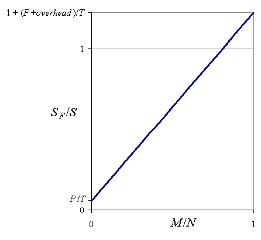
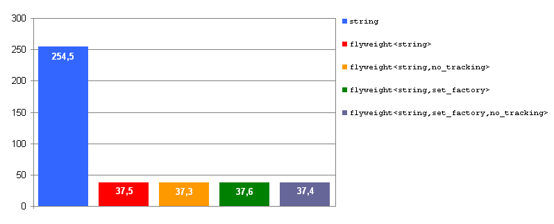
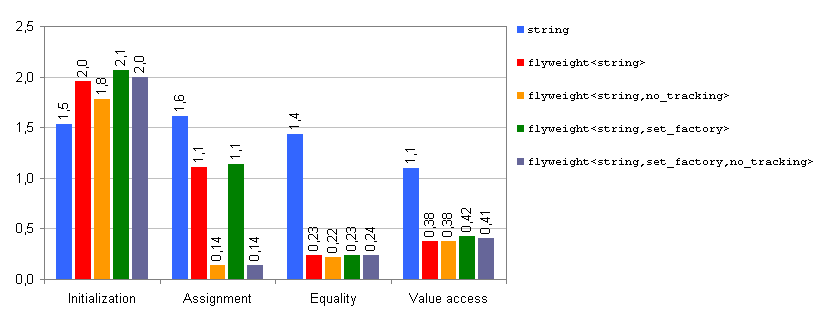
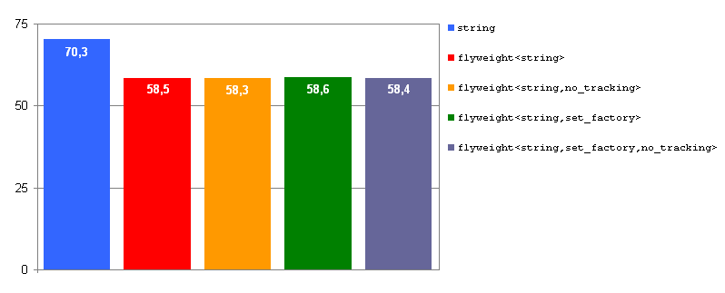
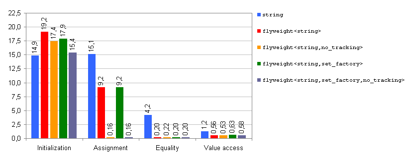

Boost.Flyweight 性能Boost.Flyweight 性能
Boost.Flyweight 性能Boost.Flyweight 性能我们展示如何估算在特定场景中使用 Boost.Flyweight 所获得的内存缩减量, 并研究其对 flyweight 各个功能领域执行时间的影响. 文中给出了一些实验结果.
正如我们在教程设计理由中所见, 享元模式基于两类对象:
flyweight 对象的唯一数据成员是一个所谓的句柄, 即由内部享元工厂提供的、用于引用其存储条目的小尺寸不透明对象. 对于默认的 hashed_factory, 这个句柄只是一个指针, 因此 sizeof(flyweight<T>)=sizeof(void*), 在典型的 32 位架构上为 4 字节. 对于其他类型的工厂, 句柄是指向工厂实现所用内部容器的迭代器: 同样, 其大小通常与指针相当.
与 flyweight<T,...> 关联、存储在工厂中的条目不仅需要持有 T 的值, 还要包含与 flyweight<T,...> 内部实现相关的附加信息:
entry = sizeof(T) + overhead.
就 Boost.Flyweight 目前的实现而言, 以下方面对 overhead 有贡献:
该表汇总了 overhead 的各来源, 即参与flyweight 实例化定义的各组件的单独贡献. 数值以 words 为单位, 即指针的大小, 在典型的 32 位架构上为 4 字节. 对齐可能引入额外的开销.
| 组件 | 开销 (字) | |
|---|---|---|
key_value |
使用键提取器 | 1(1) |
| 不使用键提取器 | 1 + sizeof(Key) |
|
| factory | hashed_factory |
~2.5 |
set_factory |
4(2) | |
assoc_container_factory |
取决于所用的容器 | |
| 跟踪机制 | refcounted |
2(3) |
no_tracking |
0 | |
sizeof(Key)<=sizeof(Value).std::set 的某些实现, 该开销减小为 3.例如, 对于 flyweight 的默认配置参数, overhead 通常为 2.5(hashed_factory) + 2(refcounted) = 4.5 字.
考虑一个场景: 有 N 个不同的 T 类型对象, 合计取 M 个不同的值. 这些对象消耗 S = N·T 字节, 其中 T 定义为 T 的平均大小 (sizeof(T) 加上 T 对象分配的动态内存). 如果现在把 T 替换为某个实例化 flyweight<T,...>, 得到的内存消耗将是
SF = N·P + M·(T + overhead),
其中 P 是 sizeof(flyweight<T,...>), 通常等于 sizeof(void*), 如前文所见. 于是比值 SF / S 为
SF / S = (P / T)+ (M / N)(1 + overhead / T).
SF / S 当 M / N 趋于 0 时趋于其最小值 P / T, 即当 T 对象之间的值冗余度越来越高时. 另一方面, 最坏情形 SF / S = 1 + (P + overhead) / T 发生在 M / N = 1 时, 即完全没有值冗余; 在这种情况下, 一开始就不该应用享元模式.

引入享元模式会多出一层间接, 一般而言, 这会在访问值时带来一些执行开销. 另一方面, 对享元对象的操纵要比移动它们所代表的笨重值快得多. 我们对 Boost.Flyweight 不同使用场景相关的执行开销或改进进行定性分析.
与初始化一个 T 类型的对象相比, 构造 flyweight<T> 会执行重要的额外工作, 例如在享元工厂中查找该值, 并在不存在时插入它. 因此, 享元的构造 (拷贝构造除外, 后者很廉价) 预计会明显慢于底层类型 T 的构造. 不过, 构造关联的 T 值本身所花费的大部分时间是可以省下的, 办法是使用键值享元.
享元对象的赋值极其迅速, 因为它只涉及对用于引用共享值的内部句柄类型的赋值. 此外, flyweight 对象的赋值从不抛出异常. 赋值时间受所使用跟踪策略的类型影响; 在这方面, no_tracking 是最快的选项.
比较两个 flyweight 对象是否相等, 归结为检查它们各自关联值的地址是否相等; 一般而言, 这个操作比比较底层值快得多. 当享元对象代表复杂值时, 例如在应用组合模式时出现的那些, 这一特性尤为重要.
从 flyweight<T> 到 const T& 的转换依赖一层间接, 它把享元对象与其关联值联系起来; 因此, 与直接使用关联值相比, 使用 Boost.Flyweight 时的值访问预计会慢一些. 不过, 这一开销可以被局部性和缓存效应带来的间接改进所掩盖: 所处理的 T 值的集合 (由 flyweight<T> 的某个实例化处理) 通常远小于不使用 Boost.Flyweight 时等价的 T 对象家族, 活跃值因此可以更好地放入处理器缓存.
设计了一个性能剖析程序, 用于测试 flyweight 的不同实例化相对于不使用 Boost.Flyweight 的基准情形的空间和时间效率. 被剖析的场景有:
std::string.flyweight<std::string>, 采用默认配置方面 (hashed_factory、refcounted 跟踪、simple_locking).flyweight<std::string,no_tracking>.flyweight<std::string,set_factory>.flyweight<std::string,set_factory,no_tracking>.实际上, 受测类型并非完全是上面列出的那些, 而是为了剖析目的做了插桩、能够跟踪已分配内存的版本. 程序把一个文本文件解析为单词数组, 然后执行涉及 Boost.Flyweight 各种使用场景的多种操纵, 这些场景已在前文讨论过. 我们使用的文本文件是 纯文本 格式的 Project Gutenberg 版 Don Quijote (2.04 MB).
程序以默认发布设置和 _SECURE_SCL=0 构建. 测试在一台配备 Intel Core 2 Duo T5500 处理器和 1 GB 内存的机器上、于 Windows XP 下运行.

结果展示了各剖析场景的内存消耗数据. MSVC++ 8.0 的标准库实现为字符串提供了所谓小缓冲区优化: std::string 对象持有一个小缓冲区, 可在字符串较短时使用, 从而避免动态分配. 这使得 sizeof(std::string) 相当大, 为 28 字节. 在我们这个特定的测试中, 字符串几乎总是保存在小缓冲区里, 因此可达的最小 SF / S 为 4/28 = 14.3%, 与实验结果相当接近; 考虑到由于文本源的高度单词冗余, 用于存储共享值的内存只是残余量 (约占总内存的 3%).

该图展示了各剖析场景在不同使用场景下的执行时间. 与我们之前的定性分析一致, flyweight 的初始化相对于基准情形带有重要开销 (额外执行时间在 20% 到 40% 之间), 而其他使用场景 (赋值、相等性比较和值访问) 则有性能增益, 某些情况下加速比超过 10. 使用 refcounted 跟踪策略相对于 no_tracking 在初始化和赋值上引入了代价, 但对相等性比较和值访问没有影响.
使用了该编译器的 Cygwin/MinGW 版本, 命令选项为 -ftemplate-depth-128 -O3 -finline-functions -DNDEBUG. 测试在与前文相同的机器上的 Cygwin 终端中运行.

GCC 3.4.4 所用的标准库实现 std::string 时采用了写时复制优化技术, 这在某些使用模式下导致极小的值冗余. 这解释了为何本例中 Boost.Flyweight 实现的内存缩减如此之差. 在赋值远少于直接构造的其他场景中, Boost.Flyweight 会优于普通的写时复制 std::string.

相对性能数据与MSVC++ 8.0 所得相似, 不过 Boost.Flyweight 在此处取得的部分加速更高 (相等性比较为 ×25, 当no_tracking生效时赋值高达 ×100).
在值冗余度极高的应用场景中引入 Boost.Flyweight 能带来内存消耗的重要缩减: 当数据量逼近机器物理内存的极限时这一点尤其重要, 因为 Boost.Flyweight 可以避免虚拟内存颠簸, 从而使应用可行. 我们已经展示了如何从一些基本的值统计信息以及所使用的 flyweight 配置方面的知识来估算可实现的内存缩减.
得益于对小型享元对象更快的操纵, 以及所分配值集合急剧缩减带来的局部性和缓存效应, Boost.Flyweight 还可以加速对象初始化之外的执行时间.
最后修订于 2014 年 9 月 1 日
© Copyright 2006-2014 Joaquín M López Muñoz. Distributed under the Boost Software License, Version 1.0. (See accompanying file LICENSE_1_0.txt or copy at http://www.boost.org/LICENSE_1_0.txt)